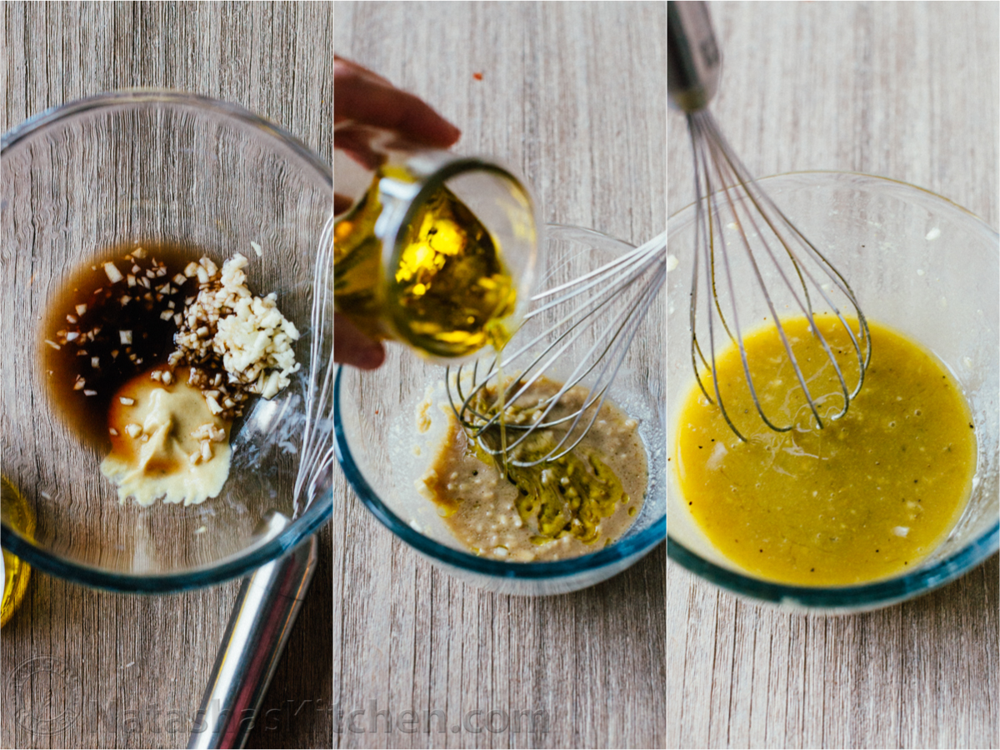
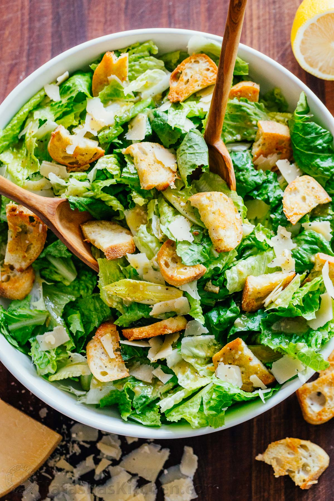

Ingredients
The Dressing
- 6 anchovy fillets packed in oil, drained
- 1 small garlic clove
- salt
- 2 large egg yolks
- 2 tablespoons fresh lemon juice, plus more
- ¾ teaspoon Dijon mustard
- 2 tablespoons olive oil
- ½ cup vegetable oil
- 3 tablespoons finely grated Parmesan
- Freshly ground black pepper
The Croutons
- 3 cups torn 1" pieces country bread, with crusts
- 3 tablespoons olive oil
The Lettuce
- 3 romaine hearts, leaves separated
The Cheese
- Parmesan, for serving
Recipe Preparation
The Dressing
Chop together anchovy fillets, garlic, and pinch of salt. Use the side of a knife blade to mash into a paste, then scrape into a medium bowl. Whisk in egg yolks, 2 Tbsp. lemon juice, and mustard. Adding drop by drop to start, gradually whisk in olive oil, then vegetable oil; whisk until dressing is thick and glossy. Whisk in Parmesan. Season with salt, pepper, and more lemon juice, if desired.
The Croutons
Make your own. Tearing, not cutting the bread ensures nooks and crannies that catch the dressing and add texture. Preheat oven to 375°. Toss bread with olive oil on a baking sheet; season with salt and pepper. Bake, tossing occasionally, until golden, 10–15 minutes.
The Lettuce
Use whole leaves; they provide the ideal mix of crispness, surface area, and structure.
The Cheese
Caesars crowned with a mound of grated Parmesan may look impressive, but all that clumpy cheese mutes the dressing. Instead, use a vegetable peeler to thinly shave a modest amount on top for little salty bursts.
The Assembly
Skip the tongs. Use your hands to gently toss the lettuce, croutons, and dressing, then top off with the shaved Parm.